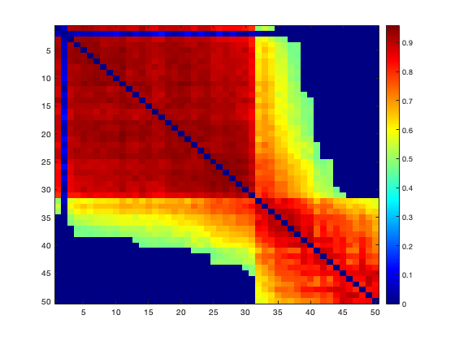
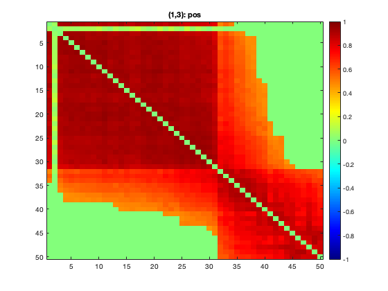

Contents
rng(111);
N=100;n=200;
rho1=0.8;rho2=0.5;rho3=-0.6;
b1=30;b2=20;b3=20;
sigma = 0.1;
x1 = normrnd(0,sigma,n,n);
e = normrnd(0,sigma,n,n);
A0{1} = 1:b1;
A0{2} = (1+b1):(b1+b2);
A0{3} = (1+b1+b2):(b1+b2+b3);
x1(A0{1},A0{1})=rho1*ones(b1,b1)+e(A0{1},A0{1});
x1(A0{2},A0{2})=rho1*ones(b2,b2)+e(A0{2},A0{2});
x1(A0{3},A0{3})=rho1*ones(b3,b3)+e(A0{3},A0{3});
for i=1:b1
x1(i,b1-1+[1:floor(i*0.6)])=rho2+normrnd(0,sigma);
x1(b1-1+[1:floor(i*0.6)],i)=rho2+normrnd(0,sigma);
end
for i=(b1+1):(b1+b2)
x1(i,b1+b2-1+[1:floor((i-b1)*0.4)])=rho3+normrnd(0,sigma);
x1(b1+b2-1+[1:floor((i-b1)*0.4)],i)=rho3+normrnd(0,sigma);
end
for i=1:n
x1(i,i)=1;
end
figure;imagesc(x1);colormap jet;colorbar;snapnow
Vmat=x1*x1';
Cor_mat_true=corrcov(Vmat);
figure;imagesc(Cor_mat_true);colormap jet;colorbar;snapnow
L= chol(Vmat);
Ymat_raw = normrnd(0,1,n,N);
Ymat = transpose(L)*Ymat_raw;
Vest = cov(transpose(Ymat));
Cor_est = corrcov(Vest);
figure;imagesc(Cor_est);colormap jet;colorbar;snapnow
save('sim3block_cor_est.mat','Cor_est');
addpath('/Users/qwu/Downloads/Network_program-master/NICE_folder/NICE_detection')
for i=1:n
Cor_est(i,i)=0;
end
perm_matrix = squareform(1:(n*(n-1)/2));
node_perm_idx = randperm(n);
perm_matrix = perm_matrix(node_perm_idx,node_perm_idx);
perm_vec = squareform(perm_matrix);
Cor_vec = squareform(Cor_est);
Cor_vec = Cor_vec(perm_vec)';
Cor_perm = squareform(Cor_vec);
figure;imagesc(Cor_perm);colormap jet;colorbar;snapnow
[CindxVICC,CIDVICC,ClistVICC]=NICE(Cor_vec, 0.1, 0, 10);
Cor_sort = Cor_perm(ClistVICC,ClistVICC);
figure;imagesc(Cor_sort);colormap jet;colorbar;snapnow
Clu_size = [];
for k=1:size(CIDVICC,2)
Clu_size(k) = size(find(CindxVICC==CIDVICC(k)),2);
end
clu_idx = Clu_size(Clu_size>1)
k = size(clu_idx,2);
addpath('/Users/qwu/Downloads/Don/Interconnected')
for i=1:k
A{i} = find(CindxVICC==CIDVICC(i));
end
idx = 1:size(Cor_perm);
idx_select = [A{1:k}];
idx_left = setdiff(idx,idx_select);
figure;imagesc(Cor_perm(idx_select, idx_select));colormap jet;colorbar;snapnow
clu00 = Cor_perm(idx_left,idx_left);


clu_idx =
34 20 16

Diagnal blocks
for i=1:3
Diag{i}=Cor_perm(A{i},A{i});
end
Off-diagnals
clear Off Off_vec
Off_1vec = [];
for i=1:2
for j=(i+1):3
Off{i,j} = Cor_perm(A{i},A{j});
CC = Cor_perm(A{i},A{j});
Off_vec{i,j} = CC(:);
VV = CC(:);
Off_1vec = [Off_1vec VV'];
end
end
size(Off_1vec)
ans =
1 1544
Test interconnectivity by KL
Off_2 = Cor_perm([A{1:k}],idx_left);
Off_2vec = Off_2(:);
true_dist = squareform(clu00);
null = [Off_1vec Off_2vec'];
width= 0.001;
for i=1:2
for j=(i+1):3
s = Off_vec{i,j}';
[P,R]=KLtest(s,null,true_dist,0.05,width);
[i j P R]
RR(i,j) = R;
end
end
RR
ans =
1.0000 2.0000 0.5180 0
ans =
1 3 0 1
ans =
2 3 0 1
RR =
0 0 1
0 0 1
Check direction
prop=[];
for i=1:2
for j=(i+1):3
Vec12 = Off_vec{i,j};
Vec12_pos = Vec12(Vec12>0);
prop(i,j) = size(Vec12_pos,1)/size(Vec12,1);
end
end
prop(prop<0.5)=-1;
prop(prop>0.5)=1;
RR_final = RR.*prop
RR_final =
0 0 1
0 0 -1
Cut and rearrange
[s,t,u]=find(RR_final);
r_cut = [];
lambda0=0.6;
r=0.1:0.005:0.8;
for i=1:size(s,1)
C1 = Diag{s(i)};
C2 = Diag{t(i)};
C12 = Off{s(i),t(i)};
r_max=InterCut(C1,C2,C12,r,lambda0);
r_cut(i) = r_max(1);
if u(i)==-1
direction = 'neg';
else
direction = 'pos';
end
[IR,IC,C1_sort,C2_sort,C12_sort,C] = InterRearrange(C1,C2,C12,r_max(1),direction);
figure;imagesc(C);colormap jet;c=colorbar;snapnow
caxis([-1 1])
title([sprintf('(%d,%d): ',s(i), t(i)),direction])
end
